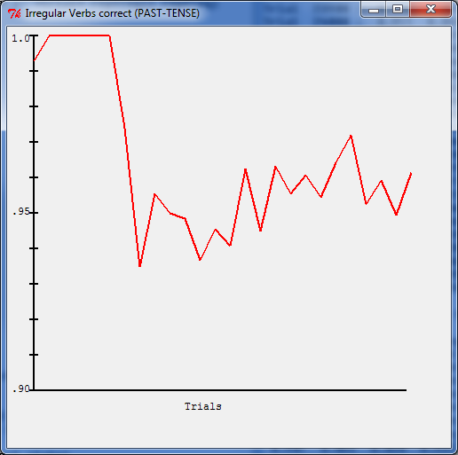
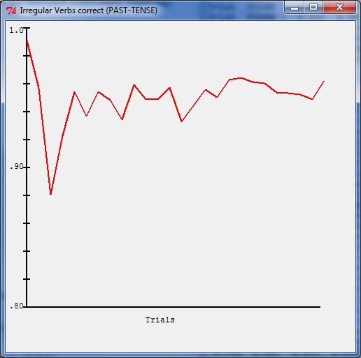
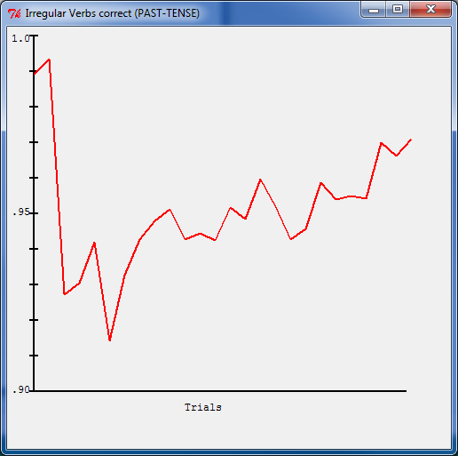

Unit 7: Production Rule Learning
In this unit we will discuss how new production rules are learned. As we will see, a model can acquire new production rules by collapsing two production rules that apply in succession into a single rule. Through this process the model will transform knowledge that is stored declaratively into a procedural form. We call this process of forming new production rules production compilation and refer to the specific act of combining two productions as a composition.
7.1 The Basic Idea
A good pair of productions for illustrating production compilation is the two that fire in succession to retrieve a paired associate in the paired model from Unit 4:
(p read-probe (p recall
=goal> =goal>
isa goal isa goal
step attending-probe step testing
=visual> =retrieval>
isa visual-object isa pair
value =val answer =ans
?imaginal> ?manual>
state free state free
==> ?visual>
+imaginal> state free
isa pair ==>
probe =val +manual>
+retrieval> cmd press-key
isa pair key =ans
probe =val =goal>
=goal> step read-study-item
step testing +visual>
) cmd clear
)If these two productions fired and retrieved the chunk for the pair of zinc & 9, production compilation would compose these two rules into the following single production:
(P PRODUCTION0
"READ-PROBE & RECALL - IMAGINAL-CHUNK0-0"
=GOAL>
STEP ATTENDING-PROBE
=VISUAL>
VALUE "zinc"
?VISUAL>
STATE FREE
?MANUAL>
STATE FREE
?IMAGINAL>
STATE FREE
==>
=GOAL>
STEP READ-STUDY-ITEM
+VISUAL>
CMD CLEAR
+MANUAL>
CMD PRESS-KEY
KEY "9"
+IMAGINAL>
PROBE "zinc"
)This production combines the work of the two productions and has built into it the paired associate components. In the next two subsections we will describe the general principles used for composing two production rules together and the factors that control how these productions compete in the conflict resolution process.
7.2 Forming a New Production
The basic idea behind forming a new production is to combine the tests in the two conditions into a single set of tests that will recognize when the pair of productions will apply and combine the two sets of actions into a single set of actions that has the same overall effect. Since the conditions consist of a set of buffer tests and the actions consist of a set of buffer transformations (either direct modifications or new requests) this can be done largely on a buffer-by-buffer basis. The complications occur when there is a buffer transformation in the action of the first production and either a test of that buffer in the condition of the second production or another transformation of the same buffer in the action of the second production. The productions above illustrate both complications with respect to the goal buffer. Because the change to the state slot of the goal buffer chunk in the first production is tested as a condition in the second production that test can be omitted from the tests of the composed production. Then, because that state slot is changed again by the second production, and the composed production only needs to reproduce the final state of the original two productions, that first goal change can also be omitted from the actions of the compiled production. The result of the overlap in the goal buffer is just a simplification of the production rule but in other cases other responses are necessary.
Because different modules use their buffers in different ways the production compilation process needs to be sensitive to those differences. For instance, in the above production we see that the retrieval buffer request was omitted from the newly formed production, but the imaginal buffer request was not. The production compilation mechanism is built around sets of rules that we call styles and each buffer is handled using the rules for the style which best categorizes its use. For each style the rules specify when two productions that use that same buffer can be combined through compilation and how to compose the uses of that buffer. By default there are five styles to which the buffers of ACT-R are assigned and we will describe the mechanisms used for those styles in the following sections. It is possible to add new styles and also to adjust the assignment of buffers to styles, but that is beyond the scope of the tutorial.
7.2.1 Motor Style Buffers
Let us first consider the compilation policy for the motor style buffers. The buffers that fit this style are the manual and vocal buffers. The main distinction of these buffers is that they never hold a chunk. They are used for requesting actions of a module which can only process one request at a time and they are only tested through queries. If the first production makes a request of one of these buffers then it is not possible to compose it with a second production if that production also makes a request of that buffer or queries the buffer for anything other than state busy. If both productions make a request, then there is a danger of jamming if both requests were to occur at the same time, and any queries that are not checking to see if the module is busy in the second production are probably there to prevent jamming in the future, and thus also block the composition.
7.2.2 Perceptual Style Buffers
Now let us consider the compilation policy for the perceptual buffers. These are the buffers in the perceptual style: visual-location, visual, aural-location, and aural. These buffers will hold chunks generated by their modules. The important characteristic about them is that those chunks are based on information in the external world, and thus are not guaranteed to result in the same request generating the same result at another time. First, like the motor style buffers, it is not possible to compose two productions which both make requests of the same perceptual style buffer or if the first production makes a request and the second production makes a query for other than state busy of that buffer because of the possibility of jamming. In addition, if the first production makes a request of one of these buffers then it is not possible to compose it with the second production if that production tests the contents of the buffer. This is because of the unpredictable nature of such requests – one does not want to create productions that encapsulate information that is based on external information which may not be valid again (at least not for most modeling purposes). The idea is that we only want to create new productions that are “safe”, and by safe we mean that the new production can only match if the productions that it was generated from would match and that its actions are the same as those of its parent productions. Basically, for the default mechanism, we do not want composed productions to be generated that introduce new errors into the model.
Thus, points where a request is made of a perceptual or motor style buffer are points where there are natural breaks in the compilation process. The standard production compilation mechanisms will not compose a production that makes such a request with a following production that operates on the same buffer.
7.2.3 Retrieval Style Buffer
Next let us consider the compilation policy for the retrieval buffer (the only buffer of the retrieval style). Because declarative memory is an internal mechanism (not subject to the whims of the outside world) it is more predictable and thus offers an opportunity for economy. The interesting opportunity for economy occurs when the first production requests a retrieval and the second tests the result of that retrieval. In this case, one can delete the request and test and instead specialize the composed production. Any variables specified in the retrieval request and bound in the harvesting of the chunk can be replaced with the specific values based on the chunk that was actually retrieved. This was what happened in the example production above where the retrieved paired-associate for zinc & 9 was built into the new production0. There is one case, however, which blocks the composition of a production which makes a retrieval request with a subsequent production. That is when the second production has a query for a retrieval failure. This cannot be composed because declarative memory grows monotonically and it is not safe to predict that in the future there will be a retrieval failure. This suggests that it is preferable, if possible, to write production rules that do not depend on retrieval failures.
7.2.4 Goal and Imaginal Style Buffers
The goal and imaginal buffers are also internal buffers allowing economies to be achieved. The mechanisms used for these two buffers are very similar, and thus will be described together. The difference between them arises from the fact that the imaginal buffer requests take time to complete, and that difference will be described below. First, we will analyze the process for which they are the same and that is broken down into cases based on whether the first production involves a request to the buffer or not.
7.2.4.a First production does not make a request
Let C1 and C2 be the conditions for the buffer in the first and second production and A1 and A2 be the corresponding productions’ buffer modification actions for that buffer. Then, the buffer test for the composed production is C1+(C2-A1) where (C2-A1) specifies those things tested in C2 that were not created in A1. The modification for the combined production is A2+(A1~A2) where (A1~A2) indicates the modifications that were in A1 that are not undone by A2. If the second production makes a request, then that request can just be included in the composed production.
7.2.4.b First production makes a request
This case breaks down into two subcases depending on whether the second production also makes a request.
The second production does not also make a request. In this case the second production’s buffer test can be deleted since its satisfaction is guaranteed by the first production. Let C1 be the buffer condition of the first production, A1 be the buffer modification action of the first production, N1 be the new request in the first production, and A2 be the buffer modification of the second production. Then the buffer test of the composed production is just C1, the goal modification is just A1, and the new request is A2+(N1~A2).
The second production also makes a request. In this case the two productions cannot be composed because this would require either skipping over the intermediate request, which would result in a chunk not being created in the new production which was generated by the initial two productions, or making two requests to the buffer in one production which could lead to jamming the module.
7.2.4.c Difference between goal and imaginal
The difference between the two comes down to the use of queries. Because the imaginal module’s requests take time, one typically needs to make queries to test whether it is free or busy whereas the goal module’s requests complete immediately and thus the state is never busy. So, for goal style buffers production compilation is blocked by any queries in either production because that represents an unusual situation and is thus deemed unsafe. For imaginal style buffers, productions which have queries are allowed when the queries and actions between the productions are “consistent”. All of the rules for composition consistency with the imaginal style buffers are a little too complex to describe here, but generally speaking if the first production has a request then the second must either test the buffer for state busy and not also make a request (like motor style buffers) or explicitly test that the buffer is free and make only modifications to the buffer.
For more details, there is a spreadsheet in the docs directory called compilation.xls which contains a matrix for each buffer style indicating what combinations of usages of a buffer between the two productions can be composed.
7.3 Utility of newly created productions
So far we have discussed how new production rules are created but not how they are used. When a new production is composed it enters procedural module and is treated just like the productions which are specified in the model definition. They are matched against the current state along with all other productions and among all of the productions which match the current state the one with the highest utility is selected and fired. When a new production, which we will call New, is composed from old productions, which we will call Old1 and Old2 which fired in that order, it is the case that whenever New could apply Old1 could also apply. (Note however because New might be specialized it does not follow that whenever Old1 could apply New could also apply.) The choice between New, Old1, and any other productions which might also apply will be determined by their utilities as was discussed in the previous unit.
A newly learned production New will initially receive a utility of zero by default (that can be changed with the :nu parameter). Assuming Old1 has a utility value greater than zero, this means that New will almost always lose in conflict resolution with Old1. However, each time New is recreated from Old1 and Old2, its utility is updated with a reward equal to the current utility of Old1, using the same learning equation as discussed in the previous unit:
Difference Learning Equation
As a consequence, even though New may not fire initially, its utility will gradually approach the utility of Old1. Once the utility of New and Old1 are close enough, New will occasionally be selected because of the noise in utilities. Once New is selected it will receive a reward like any other production which fires, and its utility can surpass Old1’s utility if it is better (it is usually at least a little better because it typically leads to rewards faster since it saves a production rule firing and often a retrieval from declarative memory).
7.4 Learning from Instruction
Generally, production compilation allows a problem to be solved with fewer productions over time and therefore performed faster. In addition to this speed-up, production compilation results in the drop-out of declarative retrieval as part of the task performance. As we saw in the example in the first section, production rules are produced that just "do it" and do not bother retrieving the intervening information. The classic case of where this applies in experimental psychology is in the learning of experimental instructions. These instructions are told to the participant and initially the participant needs to interpret these declarative instructions. However, with practice the participant will come to embed these instructions into productions that directly perform the task. These productions will be like the productions we typically write to model participant performance in the task, like those in all of the previous units. Essentially these are productions that participants learn in the warm-up phase of the experiment. The paired-learning model for this assignment contains an example of a system that interprets instructions about how to perform a paired associate task and learns the productions that do the task directly.
In the model we use the following chunks to represent the understanding of the instructions for the paired associate task (in some of our work we have built productions that read the instructions from the screen and build these chunks but we are skipping that step here to focus on the mechanisms of this unit):
(op1 isa operator pre start action read arg1 create post stimulus-read)
(op2 isa operator pre stimulus-read action associate arg1 filled arg2 fill post recalled)
(op3 isa operator pre recalled action test-arg2 arg1 respond arg2 wait)
(op4 isa operator pre respond action type arg2 response post wait)
(op5 isa operator pre wait action read arg2 fill post new-trial)
(op6 isa operator pre new-trial action complete-task post start)These are represented as operators that indicate what to do in various states during the course of a paired-associate trial. They consist of a statement of what that state is in the pre slot and what state will occur after the action in the post slot. In addition, there is an action slot to specify the action to perform and two slots, arg1 and arg2, for holding possible arguments needed during the task execution. Here is a loose translate of the six operators above to English instruction:
op1: At the start read the word and create an encoding of it as the stimulus
op2: After reading the stimulus try to retrieve an associate to the stimulus
op3: Test whether an item has been recalled and if it has not then just wait
op4: If an item has been recalled type it and then wait
op5: When waiting and a new item appears store the response you read with the stimulus
op6: This trial is complete so start the next one
The model uses a chunk in the goal buffer to maintain a current state and sub step within that state and a chunk in the imaginal buffer to hold the items relevant to the current state. For this task, the arguments are the stimulus and probe for a trial.
The model must retrieve operators from declarative memory which apply to the current state to determine what to do, and in this simple model we really just need one production which requests the retrieval of an operator relevant to the current state:
(p retrieve-operator
=goal>
isa task
state =state
step ready
==>
+retrieval>
isa operator
pre =state
=goal>
step retrieving-operator)The particular actions specified in the operators (read, associate, test-arg2, type, and complete-task) are all general actions not specific to a paired associate task. We assume that the participant knows how to do these things going into the experiment. This amounts to assuming that there are productions for processing these actions. For instance, the following two productions are responsible for reading an item and creating a chunk in the imaginal buffer which encodes the item into the arg1 slot of that chunk:
(p read-arg1
=goal>
isa task
step retrieving-operator
=retrieval>
isa operator
action read
arg1 create
post =state
=visual-location>
?visual>
state free
?imaginal>
state free
==>
+imaginal>
isa args
arg1 fill
+visual>
cmd move-attention
screen-pos =visual-location
=goal>
step attending
state =state)
(p encode-arg1
=goal>
isa task
step attending
=visual>
isa text
value =val
=imaginal>
isa args
arg1 fill
?imaginal>
state free
==>
*imaginal>
arg1 =val
=goal>
step ready)
The first production responds to the retrieval of the operator and requests a visual attention shift to an item. It also changes the state slot in the goal buffer to the operator’s post state. The second production modifies the representation in the imaginal buffer with the value from the chunk in the visual buffer and sets the goal buffer’s step slot to indicate that it is ready to retrieve the operator relevant to the next state.
The paired-learning model performs the same task as the paired model you used for Unit 4. However, rather than having specific productions for doing the task it interprets these operators that represent the instructions for doing this task. For reference, here is the data that is being modeled again:
| Trial | Accuracy | Latency |
| 1 | .000 | 0.000 |
| 2 | .526 | 2.156 |
| 3 | .667 | 1.967 |
| 4 | .798 | 1.762 |
| 5 | .887 | 1.680 |
| 6 | .924 | 1.552 |
| 7 | .958 | 1.467 |
| 8 | .954 | 1.402 |
To run the model you should first load/import the paired experiment code and then load the paired-learning-model.lisp model file from this unit since the paired experiment code loads the unit 4 model by default. The model can be run either with production compilation on or off. To turn production compilation off, set the :epl parameter to nil in the sgp setting at the top of the model. The following shows the data from running the model through the experiment without production compilation:
Latency:
CORRELATION: 0.970
MEAN DEVIATION: 0.203
Trial 1 2 3 4 5 6 7 8
0.000 2.058 1.925 1.942 1.867 1.774 1.755 1.744
Accuracy:
CORRELATION: 0.990
MEAN DEVIATION: 0.045
Trial 1 2 3 4 5 6 7 8
0.000 0.430 0.700 0.850 0.870 0.910 0.930 1.000When it is run with production compilation enabled using a value of t for :epl (which is how it is set in the given model file) the results look like this:
Latency:
CORRELATION: 0.986
MEAN DEVIATION: 0.111
Trial 1 2 3 4 5 6 7 8
0.000 2.018 1.912 1.838 1.657 1.669 1.644 1.559
Accuracy:
CORRELATION: 0.983
MEAN DEVIATION: 0.069
Trial 1 2 3 4 5 6 7 8
0.000 0.350 0.630 0.830 0.860 0.860 0.940 0.950As can be seen, whether production compilation is off or on has relatively little effect on the accuracy of recall but turning it on greatly increases the speed-up over trials in the recall time. This is because we are eliminating productions and retrievals as new rules are composed.
If you set the :pct (production compilation trace) parameter to t (and you will also need to set :v to t) you will see the system print out the new productions as they are composed or the reason why two productions could not be composed. For instance, the following is a fragment of the trace when we run one paired-associate for 1 trial with production compilation turned on.
0.400 PROCEDURAL PRODUCTION-FIRED RETRIEVE-OPERATOR
Production Compilation process started for RETRIEVE-OPERATOR
Production ENCODE-ARG1 and RETRIEVE-OPERATOR are being composed.
New production:
(P PRODUCTION1
"ENCODE-ARG1 & RETRIEVE-OPERATOR"
=GOAL>
STEP ATTENDING
STATE =STATE
=IMAGINAL>
ARG1 FILL
=VISUAL>
TEXT T
VALUE =VAL
?IMAGINAL>
STATE FREE
==>
=GOAL>
STEP RETRIEVING-OPERATOR
+RETRIEVAL>
PRE =STATE
*IMAGINAL>
ARG1 =VAL
)
Parameters for production PRODUCTION1:
:utility NIL
:u 0.000
:at 0.050
:reward NIL
:fixed-utility NIL
Setting previous production to RETRIEVE-OPERATOR.The production that is learned, production1, is a composition of these two productions:
(p encode-arg1 (p retrieve-operator
=goal> =goal>
isa task isa task
step attending state =state
=visual> step ready
isa text ==>
value =val +retrieval>
=imaginal> isa operator
isa args pre =state
arg1 fill =goal>
?imaginal> step retrieving-operator)
state free
==>
*imaginal>
arg1 =val
=goal>
step ready) The first production, encode-arg1, encodes the stimulus, and sets the goal to retrieve the next operator. This is followed by retrieve-operator, which makes the retrieval request. The composed production is particularly straight forward. Its condition is just the condition of the first production plus the check for the state slot in the goal of the second production, and its action combines the actions of the two.
It is worth understanding how the parameters of this new production are calculated. The value of the utility learning rate, in the model is 0.2 (set with the :alpha parameter) which is also the default value for :alpha. When the production is first created, its utility is set to zero (the default for new productions). The utilities of the initial rules in the system are all set to 5 (using the :iu parameter which sets the starting utility for all of the initial productions), so a value of zero means that it will almost certainly lose the competition with the parent production the next time it might be applicable. However, each time it is recreated, it receives a reward which is the same as the utility of the first parent production. Suppose that when the parents fire in sequence again and this same production is recreated, the first parent still has a utility of 5. The utility of the new rule is then updated:
A utility of 1 is still not sufficient to be selected in competition with a production of utility 5 given the noise setting of 0.4 in this model. Thus it will need to be recreated a number of times before it will have a significant chance of being chosen in conflict resolution. The speed of the utility learning is determined by the setting of . If it is set to 1, new productions will typically get very good values after only one recreation. If you make that change and run several trials of a single item you will discover in just a few trials it is selecting and firing newly learned productions which are then also going through production compilation:
25.435 PROCEDURAL PRODUCTION-FIRED PRODUCTION7
Production Compilation process started for PRODUCTION7
Production ENCODE-ARG2 and PRODUCTION7 are being composed.
New production:
(P PRODUCTION28
"ENCODE-ARG2 & PRODUCTION7"
=GOAL>
STEP ATTENDING
STATE NEW-TRIAL
=IMAGINAL>
ARG2 FILL
=VISUAL>
TEXT T
VALUE =VAL
?IMAGINAL>
STATE FREE
==>
=GOAL>
STEP RETRIEVING-OPERATOR
+GOAL>
STATE START
STEP READY
*IMAGINAL>
ARG2 =VAL
)
Parameters for production PRODUCTION28:
:utility NIL
:u 0.000
:at 0.050
:reward 20.000
:fixed-utility NIL
Setting previous production to PRODUCTION7.After just a couple more trials we will start to find productions that are the composition of multiple previously composed productions and it will eventually end up with a production like this:
260.635 PROCEDURAL PRODUCTION-FIRED PRODUCTION100
Production Compilation process started for PRODUCTION100
Production PRODUCTION38 and PRODUCTION100 are being composed.
New production:
(P PRODUCTION145
"PRODUCTION38 & PRODUCTION100 - IMAGINAL-CHUNK0-0"
=GOAL>
STATE STIMULUS-READ
STEP ATTENDING
=IMAGINAL>
ARG1 FILL
=VISUAL>
TEXT T
VALUE "zinc"
?IMAGINAL>
STATE FREE
?MANUAL>
STATE FREE
==>
=GOAL>
STATE WAIT
STEP RETRIEVING-OPERATOR
+RETRIEVAL>
PRE WAIT
+MANUAL>
CMD PRESS-KEY
KEY "9"
*IMAGINAL>
ARG1 "zinc"
ARG2 "9"
)
Parameters for production PRODUCTION145:
:utility NIL
:u 0.000
:at 0.050
:reward NIL
:fixed-utility NIL
Setting previous production to PRODUCTION100.Which responds to seeing “zinc” on the screen by placing both “zinc” and “9” in the imaginal buffer chunk’s slots and pressing the “9” key.
7.5 Assignment
Your assignment is to make a model that learns the past tense of verbs in English. The learning process of the English past tense is characterized by the so-called U-shaped learning with irregular verbs. That is, at a certain age children inflect irregular verbs like “to break” correctly, so they say “broke” if they want to use the past tense. But at a later age, they overgeneralize, and start saying “breaked”, and then at an even later stage they again inflect irregular verbs correctly. Some people, such as Pinker and Marcus, interpret this as evidence that a rule is learned to create a regular past tense (add “ed” to the stem). According to Pinker and Marcus, after this rule has been learned, it is overgeneralized so that it will also produce regularized versions of irregular verbs.
The start of a model to learn the past tense of verbs is included with the unit in the past-tense-model.lisp file. The assignment is to make the model learn a production which represents the regular rule for making the past tense and also specific productions for producing the past tense of each verb. So eventually it should learn productions which act essentially like this:
IF the goal is to make the past tense of any verb
THEN add ed to the end of that verb
IF the goal is to make the past tense of the verb have
THEN the past tense is had
The code that is provided in the past-tense.lisp and past_tense.py files for performing this task does two things. It adds correct past tenses to declarative memory, reflecting the fact that a child hears and then encodes correct past tenses from others. It also places a chunk into the goal buffer which indicate to the model that it should generate the past tense of a verb found in the imaginal buffer and then runs the model to do so. The model will be given two correct past tenses for every one that it must generate.
The past tense of verbs are encoded in chunks using the slots of this chunk-type:
(chunk-type past-tense verb stem suffix)Where the verb slot holds the base form of the verb and the combination of the stem and suffix slots forms the past tense. The value blank in the suffix slot meaning that there is no suffix to add (which is used instead of not specifying the slot so that one can distinguish a complete past tense from one that is malformed). Here are examples of correctly formed past tenses for the irregular verb have and the regular verb use:
PAST-TENSE0
VERB HAVE
STEM HAD
SUFFIX BLANK
PAST-TENSE1
VERB USE
STEM USE
SUFFIX ED
To indicate to the model that it should create a past tense the chunk in the goal buffer will have a state slot with a value of start and the chunk in the imaginal buffer will contain a chunk which has a verb slot with the base form of a verb. Here is what those buffers’ contents would look like at the start of a run to form the past tense of the verb do:
GOAL: GOAL-CHUNK0
GOAL-CHUNK0
STATE START
IMAGINAL: IMAGINAL-CHUNK0
IMAGINAL-CHUNK0
VERB DO
The model then has to fill in the stem and suffix slots of the chunk in the imaginal buffer to indicate the past tense form of the verb and set the state slot of the chunk in the goal buffer to done to indicate that it is finished. Once the state slot is set to done, one of the three productions provided with the model should fire to simulate the final encoding and “use” of the word, each of which has a different reward. There are three possible cases:
- An irregular inflection, this is when there is a value in the stem slot and the suffix is marked explicitly as blank. This use has the highest reward, because irregular verbs tend to be short.
- A regular inflection, when the stem slot is the same as the verb slot and the suffix slot has a value which is not blank. This has a slightly lower reward.
- Non-inflected when neither the stem nor suffix slots are set in the chunk. The non-inflection case applies when the model cannot come up with a past tense at all, either because it has no example to retrieve, no production to create it, or no strategy to come up with anything based on a retrieved past tense. The non-inflection situation receives the lowest reward because the past tense would have to be indicated by some other method, for example by adding “yesterday” or some other explicit reference to time.
An important thing to notice is that all three of those situations receive a reward. The model receives no feedback as to whether the past tenses it produces are correct – any validly formed result is considered a success and rewarded. The only feedback it receives with respect to the correct form of past tenses is the correctly constructed verbs that it hears between the attempts to generate its own.
You can run the model with the past-tense-trials function in Lisp or the trials function in the past_tense module for Python. It takes as an argument the number of past tenses you want the model to generate:
? (past-tense-trials 5000)
>>> past_tense.trials(5000)
As optional parameters you can specify whether or not you want the model to continue from where it left off or to start again from the beginning, and also whether the ACT-R trace should be shown while it runs. The defaults are to start from the beginning and not show the trace. To change that for each of the options you need to specify a true value. Therefore these calls would run 100 more trials continuing from where it left off and displaying the trace:
? (past-tense-trials 100 t t)
>>> past_tense.trials(100,True,True)
As the model runs, the simulation will print out lines containing four numbers which represent the results of the last 100 verbs generated by the model. The first number is the proportion correct of irregular verbs. The second number is the proportion of irregular verbs that are inflected regularly. An increase in this number suggests that a regular rule is active i.e. irregular verbs are having “ed” added to them. The third number is the proportion of irregular verbs that are not inflected at all. The fourth number is the proportion of inflected irregular verbs that are inflected correctly (the non-inflected verbs are not counted for this measure). It is in this last column that you should see a U-shape.
It usually requires more than 5000 trials to see the effect and often 15000~20000 trials are necessary before the entire U-shape in the learning forms. After the model has been run for at least 1000 trials, the past-tense-results function in Lisp or the results function in the past_tense module for Python will print out the results aggregated over 1000 trials at a time (the 100 trial summaries displayed while the model runs are usually too variable to easily discern the U-shape but they do allow you to see that the model is still running and roughly in what direction the results are going). By default the result of the correctly inflected irregular verbs will also be graphed to make it easier to see the U-shape, but that can be suppressed by providing a null value for the optional parameter (nil/None) to the reporting function if you just want to see the numbers. What you are looking for from the model is a graph that looks something like this:

Early on it gets a high percentage correct (at or near 100%), dips down, and then shows an increasing trend as it continues. That is the U-shaped learning result. An important thing to look at with the output in the graph is the vertical scale. The graph will adjust the y-intercept to display all of the results and the model should always be getting most of the trials where it does inflect the verb correct (if it’s ever dropping below 0.75 there’s probably a problem with the model).
This model differs from other models in the tutorial in that it does not model a particular experiment, but rather some long term development. This has a couple of consequences for the model. One of those is that using the perceptual and motor modules does not contribute much to the objective of the model. Thus things like actually hearing the past tenses and the generation of the word as speech are not modeled for the purpose of this exercise. They could be modeled, but it is not what the model and exercise are about and would really only serve to make things more complicated with little to no benefit. Another consequence of the nature of this task is a practical one with how long it takes to run the model to see those long term results. Because of that, we are not averaging multiple runs of the model together to report the results because the learning trajectory can vary significantly between trials and it would take a very large number of runs to reliably see the U-shape in the average results which would take a much longer time to run. Also contributing to that variability is that we are only using a very small vocabulary (though still maintaining the appropriate frequency of irregular and regular verb usage) again to keep the time needed to run it reasonable for an exercise, which leads to less data for averaging.
For reference, here are some more images of the results for the same model as shown above showing the variability in the results:


In fact, even a “correct” model may sometimes fail to show the U-shape, for example never dipping down because it learns the right inflections before it learns the regular rule or never really coming back up after dipping down because the regular rule is reinforced too much. However, on most runs (90% or more) a good model should show the U-shape in some form.
Having that sort of variability between runs is not entirely bad, as children also differ quite a bit with respect to U-shaped learning. However that does make comparing this model to data difficult, and hard data on the phenomenon are also scarce, although the phenomenon of the U-shape is reported often. For reference, data from a few children that have been followed in a longitudinal study on the topic is included with the unit in a spreadsheet (data.xls) that shows some results for comparison.
In terms of the assignment, the objective is to write a model that learns the appropriate productions for producing past tenses. There is no parameter adjustment or data fitting required. All one needs to do is write productions which can generate past tenses based on retrieving previous past tenses, and which through production compilation will over time result in new productions which directly apply the regular rule or produce the specific past tense.
The key to a successful model is to implement two different retrieval strategies in the model. The model can either try to remember the past tense for the specific verb or the model can try to generate a past tense based on retrieving any past-tense. These should be competing strategies, and only one applied on any given attempt. If the chosen strategy fails to produce a result the model should “give up” and not inflect the verb. The justification for doing that is that language generation is a rapid process and not something for which a lot of time per word can be allocated.
Additionally, the productions you write should have no explicit reference to either of the suffixes, ed or blank, because that is what the model is to eventually learn, i.e., you do not write a production that says add ed, but through the production compilation mechanism such a production is learned. Although the experiment code is only outfitted with a limited set of words, the frequency with which the words are presented to the model is in accordance with the frequency they appear in real life, and because of that, if your model learns appropriate productions it should generate the U-shaped learning automatically (although it won’t always look the same on every run as seen above). Unlike the other models in the tutorial, for this task there is a fairly small set of “good” solutions which will result in the generation of the U-shaped learning because it is actually the model’s starting productions which get composed to result in the learning of specific productions over time, and those starting productions need to allow the production compositions to happen which restricts the types of things that they can do.
There are two important things to make sure to address when writing your model with respect to performing the task. It must set the state slot of the chunk in the goal buffer to done on every trial, and the chunk in the imaginal buffer must have one of the forms described above: either a chunk with values in each of the verb, stem and suffix slots or a chunk with only a value in the verb slot. Those conditions are necessary so that one of the provided productions will fire and propagate a reward. If it does not do so, then there will be no reward propagated to promote the utility learning for that trial and the reward from a later trial will be propagated back to the productions which fired on the trial which didn’t get a reward. That later reward will be very negative because there are 200 seconds between trials, and that will make it very difficult, if not impossible, to produce the U-shaped learning. Essentially this represents the model saying something every time it tries to produce a past-tense while speaking.
One final thing to note is that when the model doesn’t give up it should produce a reasonable answer. One aspect of being reasonable is that the resulting chunk in the imaginal buffer should have the same value in the verb slot that it started with. Similarly, if there is a value in the stem slot, then it should be either that verb or the correct irregular form of that verb. For example, if it starts with “have” in the verb slot acceptable values would be “have” or “had” in the stem slot, but if it starts with a regular verb, like “look” the only acceptable value for the stem would be “look” because it shouldn’t be trying to create new irregular verbs from the regular verbs. If the model does produce an unreasonable result there will be a warning printed showing the starting verb and the result which the model created like this:
#|Warning: Incorrectly formed verb. Presented DO and produced VERB USE STEM USE SUFFIX ED. |#That indicates the model was asked to produce a past tense for “do” and responded with the correct past tense of the verb “use” instead. There will also be a warning printed if the model does not receive a reward on any trial:
#|Warning: Model did not receive a reward when given DO. |#Your model should not produce any warnings when it runs.
References
Marcus, G. F., Pinker, S., Ullman, M., Hollander, M., Rosen, T. J., & Xu, F. (1992). Overregularization in Language Acquisition. Monographs of the Society for Research in Child Development,57(4).